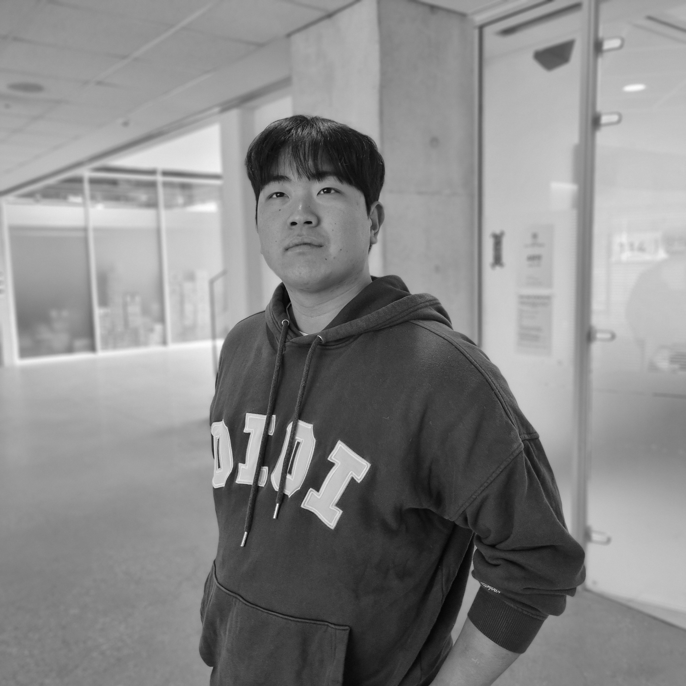

Daily Alpha | 공진우
2025.1.20 | Interviewed by Juchan Choi
This is the first interview of 'Daily Alpha.'
We took an interview with "공진우."
Please enjoy it.


This is the first interview of 'Daily Alpha.'
We took an interview with "공진우."
Please enjoy it.
Q0. 안녕하세요, Daily Alpha의 첫 알파메일 인터뷰에 응해주셔서 감사합니다. 자기소개 부탁드릴게요.
A0. 안녕하세요, 저는 공진우입니다. Daily Alpha를 사랑하시는 여러분 반갑습니다.
Q1. 가장 중요하게 여기는 삶의 원칙이나 철학은 무엇인가요?
A1. 저는 정직함을 가장 중요한 가치로 삼고 있습니다. 어디서나 제 자신을 꾸미거나 숨기지 않고 있는 그대로 드러내려고 노력합니다.
삶의 방향성을 잃지 않기 위해, 어떻게 살아가야 할지에 대해 늘 깊이 고민하고 있습니다.
Q2. 위기 상황에서 스스로를 어떻게 다스리고 문제를 해결하나요?
A2. 제가 생각하는 위기란, 인간관계에서의 갈등이나 개인적인 문제를 포함합니다.
이런 상황에서는 ‘져준다’는 태도가 중요하다고 믿습니다. 상대와의 관계에서도, 스스로와의 관계에서도 한 발 물러서는 자세가
오히려 긍정적인 결과를 가져올 수 있다고 생각합니다.
Q3. 다른 사람들에게 영감을 주거나 리더로서 역할을 할 때 가장 중요하다고 생각하는 점은 무엇인가요?
A3. 리더로서 가장 중요한 역할은 비전을 명확히 제시하는 것입니다. 집단이 존재하는 이유와 목표를 명확히 이해시키고,
지속적으로 비전을 강화하며 구성원들에게 방향성을 제시하는 것이 제가 추구하는 리더십입니다.
Q4. 좋은 친구나 동료를 정의할 때, 어떤 자질을 가장 중요하게 생각하나요?
A4. 저는 친구와 동료를 명확히 구분합니다. 동료는 업무적인 관계에서 형성되며,
친구는 사적인 영역에서 더 깊은 신뢰와 교감을 나눌 수 있는 존재입니다. 친구 관계에서는 서로에 대한 신뢰가 가장 중요하며,
특히 비밀을 지키고 중요한 정보를 공유할 수 있는 믿음이 핵심이라고 생각합니다.
Q5. 어려운 관계를 극복하거나 갈등을 해결한 경험이 있다면 공유해 주실 수 있나요?
A5. 솔직히 말하자면, 저는 알파메일로서 갈등을 두려워하지 않습니다.
갈등을 극복하기보다는 그런 상황 자체를 만드는 것을 예방하려는 태도를 지니고 있습니다.
Q6. 살면서 가장 큰 실패나 좌절은 무엇이었고, 그것을 통해 무엇을 배웠나요?
A6. 과거에 개별 연구를 신청했을 때, 교수님께서 답변을 미루시다가 결국 탈락 통보를 받은 적이 있습니다.
이 경험은 좌절감을 안겨주었지만, 스스로 더욱 적극적으로 나서야 한다는 교훈을 얻었습니다.
기회는 스스로 만들어 가는 것이라는 마음가짐의 변화를 가져다준 중요한 계기였습니다.
Q7. 새로운 기술이나 경험을 받아들이는 데 있어 어떻게 접근하시나요?
A7. 저는 학습할 때 기초부터 차근차근 쌓아 올리는 ‘Bottom-Up’ 방식을 선호합니다.
기초를 탄탄히 다지는 과정이 어떤 분야에서든 성공적인 성과를 위한 필수적인 단계라고 믿습니다.
Q8. 성공을 정의할 때 어떤 기준을 사용하시나요? 그리고 지금까지 달성한 성공 중 가장 자랑스러운 것은 무엇인가요?
A8. 제게 성공이란 단순합니다. 목표를 달성하는 것입니다. 자신이 설정한 목표를 이루었다는 사실만으로도 충분히 성공이라고 느낄 수 있습니다.
Q9. 앞으로 이루고 싶은 목표가 있다면, 그것을 위해 어떤 노력을 하고 계신가요?
A9. 대학생 신분으로서 졸업 후의 진로를 명확히 설정하는 것이 가장 큰 과제입니다. 특히 전산학부에서의 다양한 가능성을 탐색 중이며,
몰입 캠프를 통해 개발자는 안 되겠구나라는 결심도 했습니다.. 그러나 이러한 과정에서 느끼는 걱정과 불안 역시 중요한 성장의 일부라고 생각합니다.
Q10. 몸과 마음을 건강하게 유지하기 위해 실천하는 습관이나 루틴이 있나요?
A10. 저는 건강을 위해 규칙적인 취침(8시간 내외), 운동, 독서를 실천하고 있습니다. 특히 클라이밍을 강력히 추천합니다.
인천 문학경기장에서 암벽 등반을 완등했을 때 느낀 성취감은 잊을 수 없는 경험이었습니다.
@daily Alpha